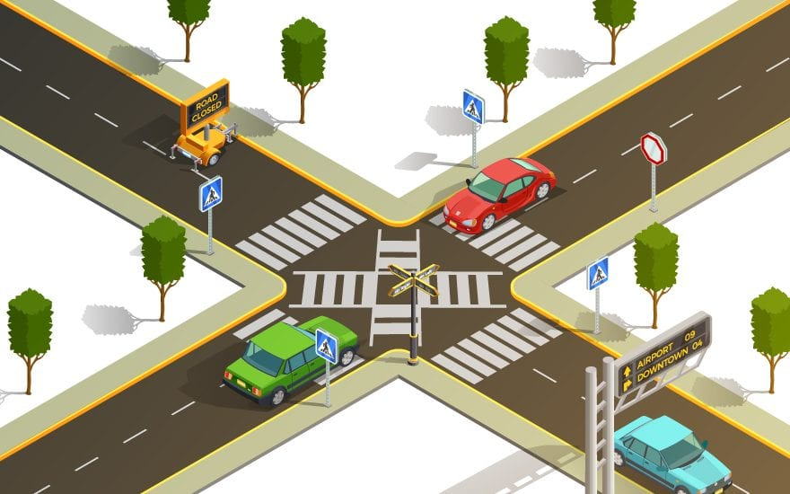

Structural Engineer
Structural Engineering is a specialty within Civil Engineering. Structural
Engineers create drawings and specifications, perform calculations, review the
work of other engineers, write reports and evaluations, and observe
construction sites.
Price: $500

Hydraulic Engineer
Hydraulic engineering as a sub-discipline of civil engineering is concerned with
the flow and conveyance of fluids, principally water and sewage. ... This area of
civil engineering is intimately related to the design of bridges, dams, channels,
canals, and levees, and to both sanitary and environmental engineering.
Price: $450

Traffic Engineer
A Traffic Engineer (a subset of civil engineering) or a Transportation Planner is
someone who assists in helping to plan, engineer, and define road systems. A Traffic
Engineer is going to ensure that roadways are designed in a safe and efficient way
and a driver is provided with all of the necessary information and safety metrics
to help ensure that his/her driving experience is safe and efficient.
Price: $350